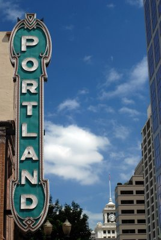

Portland's Best Cafes
Portland's Coffee Scene

For locals, the City of Roses offers a plentiful supply of neighborhood coffeehouses. It's often a wonder why so many people default to Starbucks. For tourists, Third Wave Roasters offers a great introduction to Portland's coffee scene.
Eastside Cafes
Westside Cafes
Honorable Mention
- Upper Left Roasters
- Crema Bakery & Cafe
- Spella Coffee